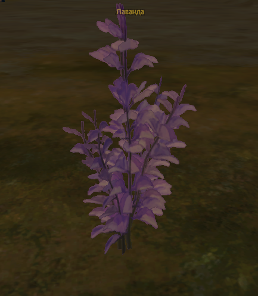
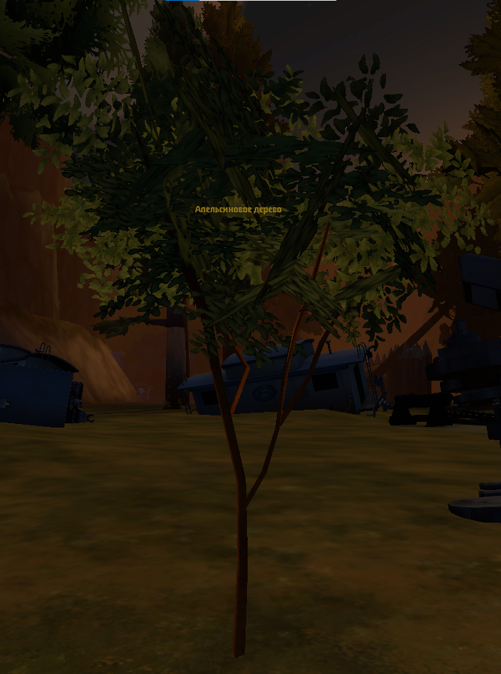
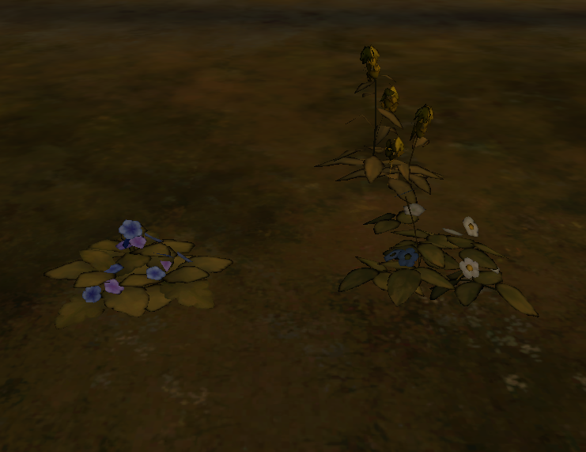

Лаванда
Растёт на горе пауков и возле неё.
Где найти компоненты и что из них собрать
Ниже — кратко и по делу: где растут компоненты для крафтов и для чего они нужны.

Растёт на горе пауков и возле неё.

Растут по всему ДК. Можно собирать с дерева апельсинов и использовать как для крафта, так и для иммунитета от простуды и гриппа.

Растут вместе в одной области из трёх растений (по одному растению в области). Находятся около поместья бабочки и в НТ.
Крафт делается у стола в поместье бабочки.
Цветочный отвар — 2 ромашки, 2 фиалки, 2 нарцисса и 2 лаванды
Цитрусовый отвар — 8 ромашек, 4 фиалки, 4 нарцисса, 4 лаванды и 2 целых апельсина
5 ромашек, 4 лаванды, 5 фиалок и 550 йен
2 ромашки, 6 фиалок, 4 нарцисса и 600 йен
6 фиалок, 3 лаванды, 3 нарцисса и 750 йен